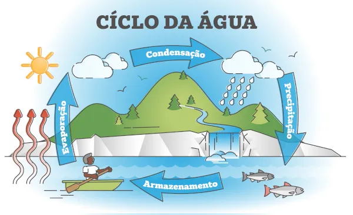
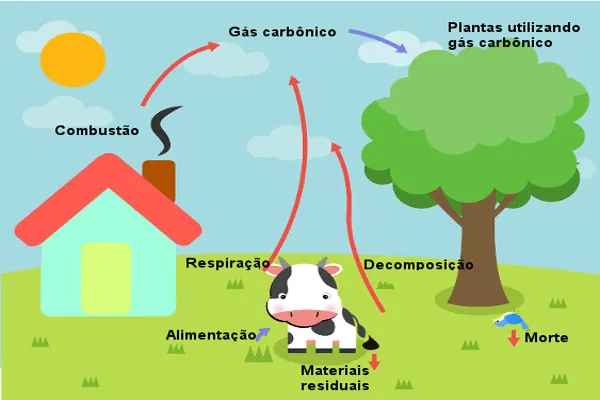
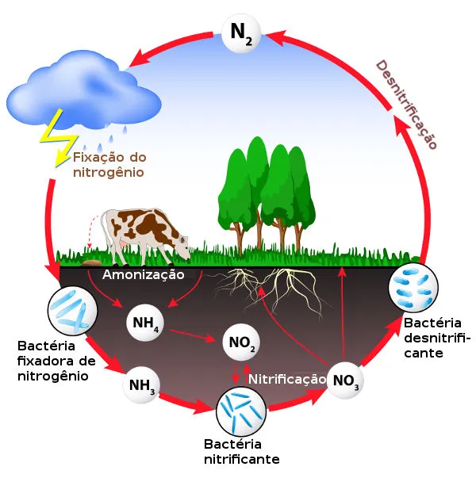

Ciclos biogeoquímicos representam o movimento dos elementos químicos
entre os seres vivos, os elementos químicos passam por inúmeras
transformações formadas por compostos organicos e inorgânicos.
Ciclo da Água:Esse ciclo é o permanente processo de transformação da água na natureza, passando de um estado
para outro (líquido, sólido ou gasoso). A essa transformação e circulação da água dá-se o nome de ciclo da água ou ciclo
hidrológico, que se desenvolve através dos processos de evaporação, condensação, precipitação, infiltração e
transpiração. A água, indispensável para a manutenção da vida, é encontrada na natureza e está distribuída nos rios,
lagos, mares, oceanos e em camadas subterrâneas do solo ou em geleiras.

Ciclo do Carbono:O Ciclo do carbono tem início quando as plantas e outros organismos autótrofos absorvem
o gás carbônico da atmosfera para utilizá-lo na fotossíntese. No ciclo biológico do Carbono, podemos ter a total
renovação do carbono atmosférico em até vinte anos. Este processo ocorre na medida em que as plantas absorvem a
energia solar e CO2 da atmosfera. Isso gera oxigênio e açúcares, como a glicose, por meio do processo conhecido
como fotossíntese, o qual é a alicerce para o crescimento das plantas.

Ciclo do Nitrogênio: Está presente no ar que respiramos e na composição do nosso DNA. Também é
aproveitado por plantas e bactérias e tem papel fundamental na agricultura, sendo o principal
elemento concentrado de dioxido de mitrogênio e de monóxido de denitrogênio

Ciclo do Fósforo:Ele é um componente importantena sustentação dos ossos dos seres vivos.
A maior parte do fósforo encontrado na natureza está presente na forma de fosfato e também é
utilizado em fertilizantes, junto com o nitrogênio.
Ciclo do Enxofre: Nos seres humanos está presente na composição de aminoácidos e proteínas
na natureza, é encontrado no solo e, principalmente, em vulcões são absorvidos por bactérias, mas a
queima de combustíveis fósseis contaminados com enxofre levam ao aumento da concentração de dióxido
de enxofre.
O efeito estufa é um fenômeno natural que permite que o planeta se mantenha em uma temperatura adequada para a manutenção
da vida. O Sol envia constantemente radiação solar ao nosso planeta. Parte dessa radiação é refletida de volta para o espaço
e parte é absorvida pela Terra e irradiada na forma de calor. O gás carbônico, o metano, óxido nitroso, vapor d’água e as
nuvens são responsáveis por formar uma barreira que permite a passagem da radiação solar e retém o calor irradiado. As
principais atividades que emitem gases do efeito estufa são: